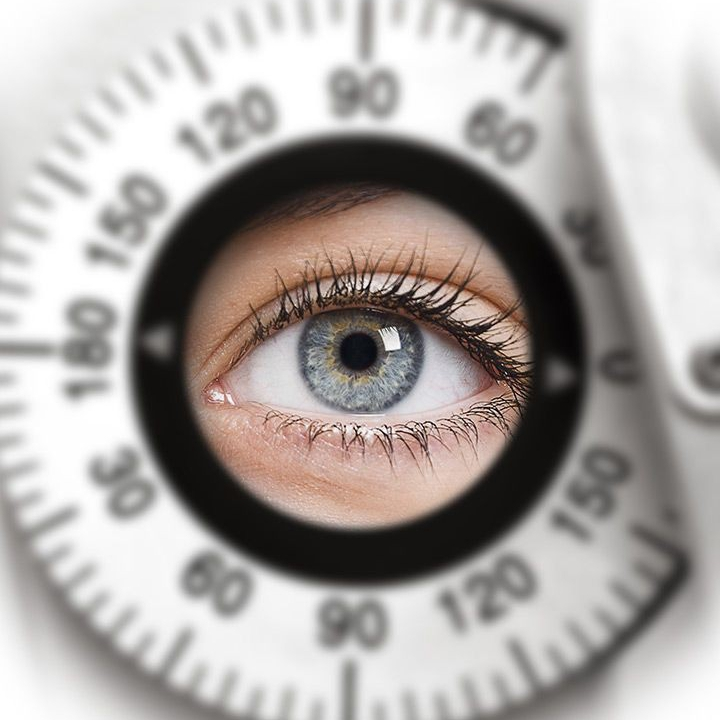
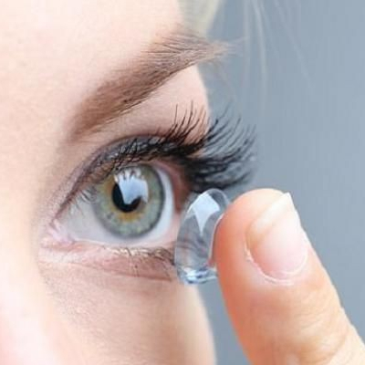
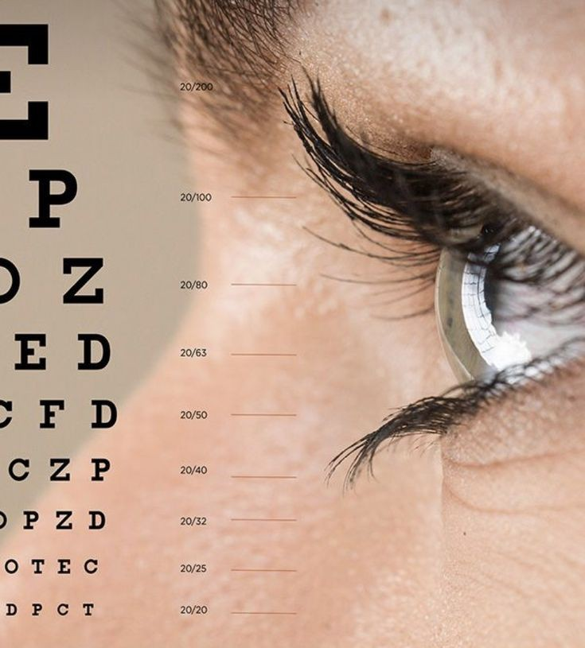

<!DOCTYPE html>

<html>
<head>
  <meta http-equiv="CONTENT-TYPE" content="text/html; charset=UTF-8">
   <meta name="viewport" content="width=device-width, initial-scale=1">
 
  <title></title>
  <link rel="stylesheet" href="اخر.css">
</head>
<body>
</body>
</html>
<div class="menu">
  <ul>
    <li><a href="#dis"> الأمراض الشائعة</a></li>
    <li><a href="#lol">المجالات الرئيسية</a></li>
    <li><a href="#top"> الصفحة الرئيسية</a></li>
    <li><a href="tel:+966 50 219 7869">اتصل بنا </a></li>
    <li><a href="#abo"> نبذة</a></li>
    <li><a href="#gal"> الطرق التشخيصية</a></li>
    
    
    
    
    
    
    
    
  </ul>
</div>
<div class="main">
  <h1 id="top">طب العيون</h1>
  <p>  طب العيون:هو فرع من فروع الطب المختص بتشخيص وعلاج الأمراض المتعلقة بالعين البشرية. يشمل هذا الفرع دراسة تشريح العين، وظائفها، وطرق تشخيص وعلاج الأمراض العينية
    </p>
  <br>
  <h2 id="lol">المجالات الرئيسية</h2>
  <p>
     ١_  تشخيص وعلاج أمراض العين الشائعة: مثل الإصابةبالعشى، التهاب الملتحمة، والتهاب العين
    <br>٢_جراحة العين: مثل جراحة القرنية، جراحة العضلات، وجراحة المياه الزرقاء
    <br>٣_طب العين البديل: مثل العلاج بالليزر، والعلاج بالعقاقير
    <br>٤_طب الأطفال: تشخيص وعلاج أمراض العين لدى الأطفال، مثل اللابسي، والتأخر في النمو
    <br>٥_طب العين المتخصص: مثل طب العين الجراحي، طب العين البصري، وطب العين العصبي
  </p>
  
    <h3 id="dis">الأمراض الشائعة</h3>
  <p>١_العمي: فقدان البصر بشكل كامل أو جزئي
    <br> ٢_اللابسي: انفصال الشبكية
    <br> ٣_التهاب الملتحمة: التهاب الغشاء المخاطي الذي يغطي العين
    <br>٤_السرطان: السرطان في العين أو حولها
  </p>
  
</div>
<div class="photos">
  <h2 id="gal">الطرق التشخيصية</h2>
  <p>١_فحص البصر:قياس حدة البصر
    <br>٢_ فحص العين بالميكروسكوب:فحص العين باستخدام
    <br>٣_فحص الشبكية: فحص الشبكية بالكاميرا
    <br>٤_فحص الضغط العيني: قياس ضغط العين
    <br>٥_الأشعة السينية والرنين المغناطيسي: لتشخيص الأمراض العينية الداخلية
  </p>
  
<div class="footer">
  <h2 id="abo">نبذة</h2>
  <p>هذا الموقع يوفر نظرة عامة على طب العيون، إذا كنت ترغب في الحصول على معلومات أكثر تفصيلاً، يرجى الاتصال بنا</p>
  <h2>روابط مفيدة</h2>
  <ul>
  <li><a href="https://mawdoo3.com/"target="_blank">الموقع الثالث</a></li>
  <li><a href="https://mawdoo3.com/"target="_blank">الموقع الثاني</a></li>
  <li><a href="https://mawdoo3.com/"target="_blank">الموقع الأول</a></li>
    </ul>
</div>
